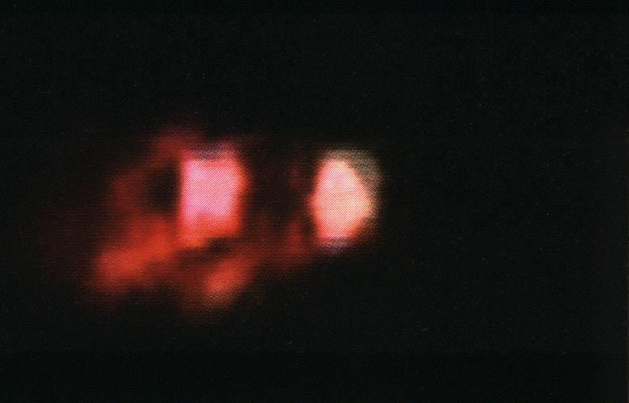
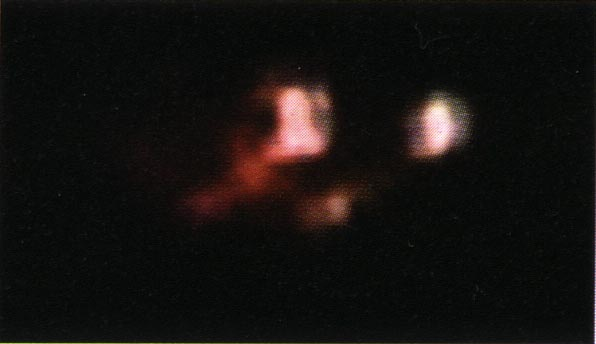
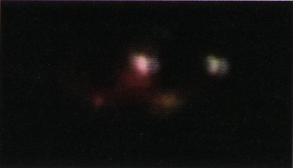
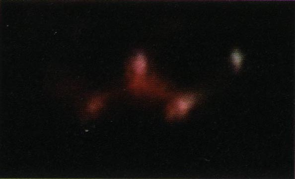

 David Spoor filme un objet avec un caméscope à téléobjectif. Aucun autre
objet ne figure dans la prise de vue, si bien que l'échelle et la distance sont difficiles à apprécier. L'ovni se
déplace très lentement de gauche à droite à travers le ciel. Il semble changer de forme de temps en temps, mais
Spoor admet que cette impression peut être l'effet de brusques changements de trajectoire. Il émet l'hypothèse que
l'ovni fait partie intégrante d'un appareil plus grand, dans la mesure où les lumières semblent montées sur quelque
chose. Pour Spoor, ces lumières n'appartiennent pas à un avion conventionnel.
A Fraisans, Jura, France, 1 homme en train de couper du
bois observe d'un objet ressemblant à une fusée se déplaçant dans le ciel avec un grondement sourd SEPRA : PAN
classé C.
A l'occasion du 1er symposium national sur le sujet ovnis, réalisé dans la capitale de la province de Coquimbo (Chili), un important groupe d'ufologues envoie à Eduardo Frei Ruiz-Tagle (président
de la République chilien), une lettre dans laquelle ils exposent une requête pour que l'information relative
aux objets volants non-identifiés soit rendue publique. Il leur est répondu que le CEFAA
a été créé dans le but d'étudier ces phénomènes.
A Montpellier, Hérault, France, 1 témoin observe 1 objet
noir dans le ciel L'enquête montrera rapidement que le témoin a observé le cerf-volant utilisé le même jour par un photographe professionnel pour prendre des vues aériennes. Une démonstration est faite au témoin qui confirmera que le cerf-volant correspond bien à ce qu'il a observéSEPRA: PAN
classé A.
Ferdinand D., Simone B. et Béatrice S. roulent sur la RN13 entre
Evreux, Eure (à 140 km à l'ouest de Paris) et Saint André-de-l'Eure lorsqu'ils voient 4 objets lumineux dans le ciel : 1 premier
phénomène est d'abord vu près du périmètre de la base 105 Evreux/Fauville de l'Armée de l'Air. Il avait une forme
sphérique et restait immobile devant nous, rapportera Ferdinand. Pendant qu'on roulait dans le "vieil
Evreux," l'objet était sur notre droite. Ils déposent Béatrice chez elle dans la section d'Evreux du Val David
puis roule le long de la D67, pour rentrer à Saint André-de-l'Eure. Nous avons alors vu 3 autres sphères en
groupe stationnaire, se souvient Simone. Le 1er est arrivé et a eu un mouvement saccadé. Puis les ovnis se
sont dispersés dans toutes les directions. Arrêtant la voiture, Ferdinand et Simone sortent pour mieux voir.
Ils voient revenir le 1er ovni. L'intensité de la lumière variat, semblant donner une impression de
rétrécissement et l'extension. Il a disparu au bout de Thierry Garnier.